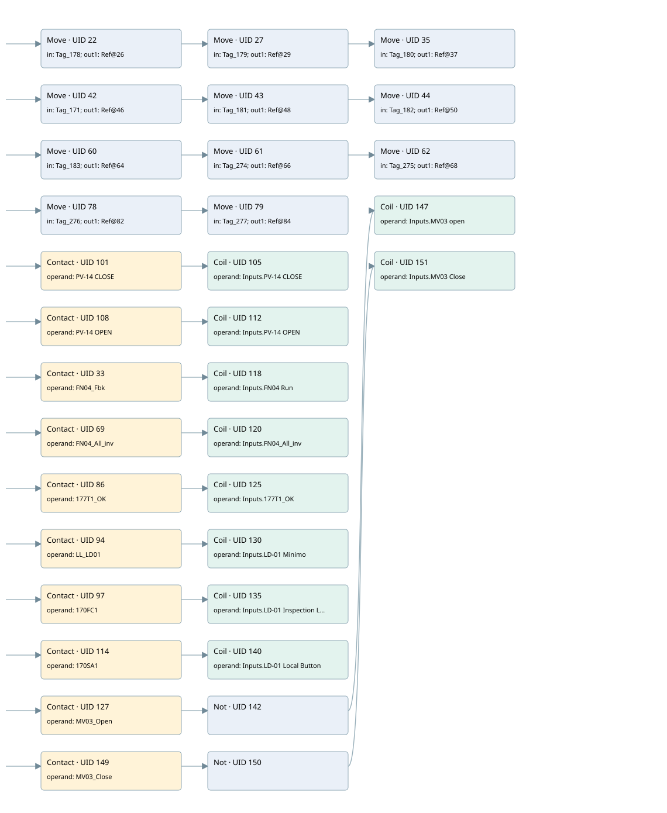

hmi inputs
hmi inputs · 검색 색인 순서 1 · 원본 내부 NID 추정 1
백업 PLF 원본의 2982554 바이트 위치에서 복원한 XML. 검색 문서 1070의 객체 키 16102200e916000000000000와 연결했다. 이름 해석 31/42개. 남은 RefId는 상수 또는 미해석 참조다.
연결 구조 다시 그리기
원본 Part/PCon/Wire를 이용한 연결도다. TIA 화면의 래더 배치 또는 실행 결과를 재현한 그림은 아니다. 핀 연결은 아래 표와 원본 XML을 기준으로 읽는다. 노드 위에 마우스를 두면 피연산자 이름을 볼 수 있다.

접점·코일·블록과 피연산자
| Part UID | Gate | Negated 핀 | 연결 피연산자 |
|---|---|---|---|
| 22 | Move | in = Tag_178; out1 = RefId 5 / ORef UID 26 | |
| 27 | Move | in = Tag_179; out1 = RefId 9 / ORef UID 29 | |
| 35 | Move | in = Tag_180; out1 = RefId 11 / ORef UID 37 | |
| 42 | Move | in = Tag_171; out1 = RefId 14 / ORef UID 46 | |
| 43 | Move | in = Tag_181; out1 = RefId 16 / ORef UID 48 | |
| 44 | Move | in = Tag_182; out1 = RefId 18 / ORef UID 50 | |
| 60 | Move | in = Tag_183; out1 = RefId 20 / ORef UID 64 | |
| 61 | Move | in = Tag_274; out1 = RefId 22 / ORef UID 66 | |
| 62 | Move | in = Tag_275; out1 = RefId 24 / ORef UID 68 | |
| 78 | Move | in = Tag_276; out1 = RefId 26 / ORef UID 82 | |
| 79 | Move | in = Tag_277; out1 = RefId 28 / ORef UID 84 | |
| 101 | Contact | operand = PV-14 CLOSE | |
| 105 | Coil | operand = Inputs.PV-14 CLOSE | |
| 108 | Contact | operand = PV-14 OPEN | |
| 112 | Coil | operand = Inputs.PV-14 OPEN | |
| 33 | Contact | operand = FN04_Fbk | |
| 118 | Coil | operand = Inputs.FN04 Run | |
| 69 | Contact | operand = FN04_All_inv | |
| 120 | Coil | operand = Inputs.FN04_All_inv | |
| 86 | Contact | operand = 177T1_OK | |
| 125 | Coil | operand = Inputs.177T1_OK | |
| 94 | Contact | operand = LL_LD01 | |
| 130 | Coil | operand = Inputs.LD-01 Minimo | |
| 97 | Contact | operand = 170FC1 | |
| 135 | Coil | operand = Inputs.LD-01 Inspection LS | |
| 114 | Contact | operand = 170SA1 | |
| 140 | Coil | operand = Inputs.LD-01 Local Button | |
| 127 | Contact | operand = MV03_Open | |
| 142 | Not | ||
| 147 | Coil | operand = Inputs.MV03 open | |
| 149 | Contact | operand = MV03_Close | |
| 150 | Not | ||
| 151 | Coil | operand = Inputs.MV03 Close |
접점 경로를 펼친 조건식
Contact·O/A·비교기의 원본 연결을 읽기 쉽게 펼친 보조 해석이다. POWER는 전원 레일 시작을 뜻한다. 호출 블록·에지·타이머의 내부 동작과 다중 쓰기 순서는 이 표로 실행 검증하지 않았다. 미해석 핀과 RefId는 원문 연결표에서 확인한다.
| UID | 동작 | 대상 | 원본 접점 경로 | 내용 |
|---|---|---|---|---|
| 22 | Move | ORef UID 26 | POWER | Move 입력 Tag_178 |
| 27 | Move | ORef UID 29 | Move UID 22.eno (블록 동작 확인) | Move 입력 Tag_179 |
| 35 | Move | ORef UID 37 | Move UID 27.eno (블록 동작 확인) | Move 입력 Tag_180 |
| 42 | Move | ORef UID 46 | POWER | Move 입력 Tag_171 |
| 43 | Move | ORef UID 48 | Move UID 42.eno (블록 동작 확인) | Move 입력 Tag_181 |
| 44 | Move | ORef UID 50 | Move UID 43.eno (블록 동작 확인) | Move 입력 Tag_182 |
| 60 | Move | ORef UID 64 | POWER | Move 입력 Tag_183 |
| 61 | Move | ORef UID 66 | Move UID 60.eno (블록 동작 확인) | Move 입력 Tag_274 |
| 62 | Move | ORef UID 68 | Move UID 61.eno (블록 동작 확인) | Move 입력 Tag_275 |
| 78 | Move | ORef UID 82 | POWER | Move 입력 Tag_276 |
| 79 | Move | ORef UID 84 | Move UID 78.eno (블록 동작 확인) | Move 입력 Tag_277 |
| 105 | Coil | Inputs.PV-14 CLOSE | PV-14 CLOSE | 조건에 따른 Coil 기록 |
| 112 | Coil | Inputs.PV-14 OPEN | PV-14 OPEN | 조건에 따른 Coil 기록 |
| 118 | Coil | Inputs.FN04 Run | FN04_Fbk | 조건에 따른 Coil 기록 |
| 120 | Coil | Inputs.FN04_All_inv | FN04_All_inv | 조건에 따른 Coil 기록 |
| 125 | Coil | Inputs.177T1_OK | 177T1_OK | 조건에 따른 Coil 기록 |
| 130 | Coil | Inputs.LD-01 Minimo | LL_LD01 | 조건에 따른 Coil 기록 |
| 135 | Coil | Inputs.LD-01 Inspection LS | 170FC1 | 조건에 따른 Coil 기록 |
| 140 | Coil | Inputs.LD-01 Local Button | 170SA1 | 조건에 따른 Coil 기록 |
| 147 | Coil | Inputs.MV03 open | NOT [MV03_Open] | 조건에 따른 Coil 기록 |
| 151 | Coil | Inputs.MV03 Close | NOT [MV03_Close] | 조건에 따른 Coil 기록 |
원본 배선 연결
| Wire UID | 동일 Wire 연결 끝점 |
|---|---|
| 21 | Powerrail {} ↔ Part 22.en ↔ Part 42.en ↔ Part 60.en ↔ Part 78.en ↔ Part 101.in ↔ Part 108.in ↔ Part 33.in ↔ Part 69.in ↔ Part 86.in ↔ Part 94.in ↔ Part 97.in ↔ Part 114.in ↔ Part 127.in ↔ Part 149.in |
| 23 | ORef 25 (Tag_178) ↔ Part 22.in |
| 34 | Part 22.eno ↔ Part 27.en |
| 24 | Part 22.out1 ↔ ORef 26 (RefId 5) |
| 31 | ORef 28 (Tag_179) ↔ Part 27.in |
| 41 | Part 27.eno ↔ Part 35.en |
| 32 | Part 27.out1 ↔ ORef 29 (RefId 9) |
| 39 | ORef 36 (Tag_180) ↔ Part 35.in |
| 40 | Part 35.out1 ↔ ORef 37 (RefId 11) |
| 52 | ORef 45 (Tag_171) ↔ Part 42.in |
| 53 | Part 42.eno ↔ Part 43.en |
| 54 | Part 42.out1 ↔ ORef 46 (RefId 14) |
| 55 | ORef 47 (Tag_181) ↔ Part 43.in |
| 56 | Part 43.eno ↔ Part 44.en |
| 57 | Part 43.out1 ↔ ORef 48 (RefId 16) |
| 58 | ORef 49 (Tag_182) ↔ Part 44.in |
| 59 | Part 44.out1 ↔ ORef 50 (RefId 18) |
| 70 | ORef 63 (Tag_183) ↔ Part 60.in |
| 71 | Part 60.eno ↔ Part 61.en |
| 72 | Part 60.out1 ↔ ORef 64 (RefId 20) |
| 73 | ORef 65 (Tag_274) ↔ Part 61.in |
| 74 | Part 61.eno ↔ Part 62.en |
| 75 | Part 61.out1 ↔ ORef 66 (RefId 22) |
| 76 | ORef 67 (Tag_275) ↔ Part 62.in |
| 77 | Part 62.out1 ↔ ORef 68 (RefId 24) |
| 88 | ORef 81 (Tag_276) ↔ Part 78.in |
| 89 | Part 78.eno ↔ Part 79.en |
| 90 | Part 78.out1 ↔ ORef 82 (RefId 26) |
| 91 | ORef 83 (Tag_277) ↔ Part 79.in |
| 93 | Part 79.out1 ↔ ORef 84 (RefId 28) |
| 100 | ORef 102 (PV-14 CLOSE) ↔ Part 101.operand |
| 103 | Part 101.out ↔ Part 105.in |
| 104 | ORef 106 (Inputs.PV-14 CLOSE) ↔ Part 105.operand |
| 107 | ORef 109 (PV-14 OPEN) ↔ Part 108.operand |
| 110 | Part 108.out ↔ Part 112.in |
| 111 | ORef 113 (Inputs.PV-14 OPEN) ↔ Part 112.operand |
| 30 | ORef 38 (FN04_Fbk) ↔ Part 33.operand |
| 116 | Part 33.out ↔ Part 118.in |
| 117 | ORef 119 (Inputs.FN04 Run) ↔ Part 118.operand |
| 51 | ORef 80 (FN04_All_inv) ↔ Part 69.operand |
| 124 | Part 69.out ↔ Part 120.in |
| 123 | ORef 121 (Inputs.FN04_All_inv) ↔ Part 120.operand |
| 85 | ORef 87 (177T1_OK) ↔ Part 86.operand |
| 129 | Part 86.out ↔ Part 125.in |
| 128 | ORef 126 (Inputs.177T1_OK) ↔ Part 125.operand |
| 92 | ORef 95 (LL_LD01) ↔ Part 94.operand |
| 134 | Part 94.out ↔ Part 130.in |
| 133 | ORef 131 (Inputs.LD-01 Minimo) ↔ Part 130.operand |
| 96 | ORef 98 (170FC1) ↔ Part 97.operand |
| 139 | Part 97.out ↔ Part 135.in |
| 138 | ORef 136 (Inputs.LD-01 Inspection LS) ↔ Part 135.operand |
| 99 | ORef 115 (170SA1) ↔ Part 114.operand |
| 144 | Part 114.out ↔ Part 140.in |
| 143 | ORef 141 (Inputs.LD-01 Local Button) ↔ Part 140.operand |
| 122 | ORef 132 (MV03_Open) ↔ Part 127.operand |
| 137 | Part 127.out ↔ Part 142.in |
| 145 | Part 142.out ↔ Part 147.in |
| 146 | ORef 148 (Inputs.MV03 open) ↔ Part 147.operand |
| 155 | ORef 152 (MV03_Close) ↔ Part 149.operand |
| 156 | Part 149.out ↔ Part 150.in |
| 157 | Part 150.out ↔ Part 151.in |
| 158 | ORef 153 (Inputs.MV03 Close) ↔ Part 151.operand |
식별자 해석 근거 42개
| ORef UID | RefId | 이름 | IdentXmlPart 파일 | 해석 방법 |
|---|---|---|---|---|
| 25 | 3 | Tag_178 | 0627-IdentXmlPart.xml | UID/RID + search-text + NID agreement |
| 26 | 5 | 미해석 RefId | 식별 선언 원본 참조 | 미해석 |
| 28 | 8 | Tag_179 | 0627-IdentXmlPart.xml | UID/RID + search-text + NID agreement |
| 29 | 9 | 미해석 RefId | 식별 선언 원본 참조 | 미해석 |
| 36 | 10 | Tag_180 | 0627-IdentXmlPart.xml | UID/RID + search-text + NID agreement |
| 37 | 11 | 미해석 RefId | 식별 선언 원본 참조 | 미해석 |
| 45 | 13 | Tag_171 | 0627-IdentXmlPart.xml | UID/RID + search-text + NID agreement |
| 46 | 14 | 미해석 RefId | 식별 선언 원본 참조 | 미해석 |
| 47 | 15 | Tag_181 | 0627-IdentXmlPart.xml | UID/RID + search-text + NID agreement |
| 48 | 16 | 미해석 RefId | 식별 선언 원본 참조 | 미해석 |
| 49 | 17 | Tag_182 | 0627-IdentXmlPart.xml | UID/RID + search-text + NID agreement |
| 50 | 18 | 미해석 RefId | 식별 선언 원본 참조 | 미해석 |
| 63 | 19 | Tag_183 | 0627-IdentXmlPart.xml | UID/RID + search-text + NID agreement |
| 64 | 20 | 미해석 RefId | 식별 선언 원본 참조 | 미해석 |
| 65 | 21 | Tag_274 | 0627-IdentXmlPart.xml | UID/RID + search-text + NID agreement |
| 66 | 22 | 미해석 RefId | 식별 선언 원본 참조 | 미해석 |
| 67 | 23 | Tag_275 | 0627-IdentXmlPart.xml | UID/RID + search-text + NID agreement |
| 68 | 24 | 미해석 RefId | 식별 선언 원본 참조 | 미해석 |
| 81 | 25 | Tag_276 | 0627-IdentXmlPart.xml | UID/RID + search-text + NID agreement |
| 82 | 26 | 미해석 RefId | 식별 선언 원본 참조 | 미해석 |
| 83 | 27 | Tag_277 | 0627-IdentXmlPart.xml | UID/RID + search-text + NID agreement |
| 84 | 28 | 미해석 RefId | 식별 선언 원본 참조 | 미해석 |
| 102 | 33 | PV-14 CLOSE | 0627-IdentXmlPart.xml | UID/RID + search-text + NID agreement |
| 106 | 34 | Inputs.PV-14 CLOSE | 0629-IdentXmlPart.xml | UID/RID + search-text + NID agreement |
| 109 | 35 | PV-14 OPEN | 0627-IdentXmlPart.xml | UID/RID + search-text + NID agreement |
| 113 | 36 | Inputs.PV-14 OPEN | 0629-IdentXmlPart.xml | UID/RID + search-text + NID agreement |
| 38 | 139 | FN04_Fbk | 0627-IdentXmlPart.xml | UID/RID + search-text + NID agreement |
| 119 | 146 | Inputs.FN04 Run | 0629-IdentXmlPart.xml | UID/RID + search-text + NID agreement |
| 80 | 140 | FN04_All_inv | 0627-IdentXmlPart.xml | UID/RID + search-text + NID agreement |
| 121 | 147 | Inputs.FN04_All_inv | 0629-IdentXmlPart.xml | UID/RID + search-text + NID agreement |
| 87 | 141 | 177T1_OK | 0627-IdentXmlPart.xml | UID/RID + search-text + NID agreement |
| 126 | 148 | Inputs.177T1_OK | 0629-IdentXmlPart.xml | UID/RID + search-text + NID agreement |
| 95 | 142 | LL_LD01 | 0627-IdentXmlPart.xml | UID/RID + search-text + NID agreement |
| 131 | 149 | Inputs.LD-01 Minimo | 0629-IdentXmlPart.xml | UID/RID + search-text + NID agreement |
| 98 | 144 | 170FC1 | 0627-IdentXmlPart.xml | UID/RID + search-text + NID agreement |
| 136 | 150 | Inputs.LD-01 Inspection LS | 0629-IdentXmlPart.xml | UID/RID + search-text + NID agreement |
| 115 | 145 | 170SA1 | 0627-IdentXmlPart.xml | UID/RID + search-text + NID agreement |
| 141 | 151 | Inputs.LD-01 Local Button | 0629-IdentXmlPart.xml | UID/RID + search-text + NID agreement |
| 132 | 152 | MV03_Open | 0627-IdentXmlPart.xml | UID/RID + search-text + NID agreement |
| 148 | 153 | Inputs.MV03 open | 0629-IdentXmlPart.xml | UID/RID + search-text + NID agreement |
| 152 | 154 | MV03_Close | 0627-IdentXmlPart.xml | UID/RID + search-text + NID agreement |
| 153 | 155 | Inputs.MV03 Close | 0629-IdentXmlPart.xml | UID/RID + search-text + NID agreement |
검색 코드 보조 자료
참조 명칭을 찾기 위한 자료이며 실행 순서나 AND/OR 관계는 위 연결표로 확인한다.
move "tag_178" move "tag_179" move "tag_180" move "tag_171" move "tag_181" move "tag_182" %db13.dbw6 %db13.dbw8 %db13.dbw10 move "tag_183" move "tag_274" move "tag_275" %db13.dbw12 %db13.dbw14 %db13.dbw16 move "tag_276" move "tag_277" %db13.dbw18 %db13.dbw20 "pv-14 close" "inputs"."pv-14 close" "pv-14 open" "inputs"."pv-14 open" "fn04_fbk" "inputs"."fn04 run" "fn04_all_inv" "inputs".fn04_all_inv "177t1_ok" "inputs"."177t1_ok" "ll_ld01" "inputs"."ld-01 minimo" "170fc1" "inputs"."ld-01 inspection ls" "170sa1" "inputs"."ld-01 local button" "mv03_open" "inputs"."mv03 open" "mv03_close" "inputs"."mv03 close" %db13.dbw0 %db13.dbw2 %db13.dbw4